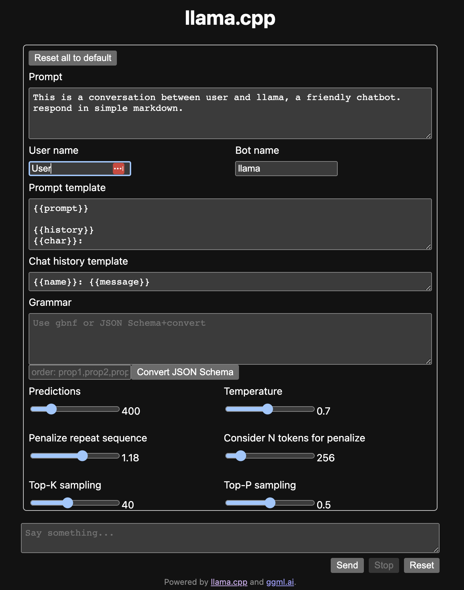

前言
前不久 Meta 开源了Llama 2 - Meta AI ，并且是可商用的。
所以今天要在 Mac 上搭建 Llama ，由于 Llama 需要非常高的内存普通玩家玩不起，所以为了在 Mac 上跑起来就有了ggerganov/llama.cpp: Port of Facebook’s LLaMA model in C/C++ ，本文也是采用 llama.cpp 的方式进行部署。
安装
在使用前我们需要先编译好 llama ，在 Mac 上可以开启 Metal 加速
我这里使用 CMake 进行编译，当然使用 make 也是可以的，编译之前确保安装好了 XCode 和 CMake
1
2
3
4
5
6
|
brew install cmake
git clone https://github.com/ggerganov/llama.cpp
cd llama.cpp
mkdir build && cd build
cmake -DLLAMA_METAL=ON .. # 支持 Metal 加速
cmake --build . --config Release
|
编译好的文件都在 build/bin 下面
准备数据(下载大模型)
编译好之后，我们需要下载好 llama2 的大模型，由于下载还需要和 Meta 申请，着实麻烦。
所以我就使用了 Vicuna ，它是由 UC 伯克利、CMU、斯坦福等机构的学者在 Llama 基础上进行微调后得到的模型，不用申请，省去了申请的麻烦。
如果你不想这么麻烦，也可以直接使用TheBloke/Llama-2-7B-GGML · Hugging Face ，这是 TheBloke 转换好并且量化之后的模型
1
2
3
|
brew install git-lfs
cd models
git lfs clone https://huggingface.co/lmsys/vicuna-7b-v1.5
|
转换数据
下载好了模型，还不能直接给 llama.cpp 使用，还需要把他转换为 ggml 的格式。
转换的工具也在 llam.cpp 中，它是 Python 写的，所以我这里使用 Anaconda 创建一个 Python3.9 的环境用来运行脚本
1
2
|
conda create -n llama python=3.9
conda activate llama
|
激活环境后需要安装一下依赖，然后就可以运行转换脚本了
1
2
|
python3 -m pip install -r requirements.txt
python3 convert.py models/vicuna-7b-v1.5
|
转换挺快的，运行完成后会得到一个 ggml-model-f16.bin 的文件。
量化 quantize
1
|
./build/bin/quantize ./models/vicuna-7b-v1.5/ggml-model-f16.bin ./models/vicuna-7b-v1.5/ggml-model-q4_0.bin q4_0
|
使用
条件都准备好了，来小试牛刀一下
1
|
./build/bin/main -m models/vicuna-7b-v1.5/ggml-model-q4_0.bin -n 128 -p 'The first man on the moon was '
|
输出结果如下
1
2
3
|
The first man on the moon was 40 years old at the time of his historic achievement.
As Neil Armstrong stepped onto the surface of the moon, he declared, "That's one small step for man, one giant leap for mankind." This iconic moment in history marked a significant milestone and paved the way for many more great advancements in space exploration and scientific research.
The moon landing was the result of years of dedicated hard work by thousands of scientists engineers technicians and support staff, who worked tirelessly to overcome numerous technical challenges, such as developing building developing developing developing developing developing developing developing developing
|
翻译如下
1
2
3
|
第一个登上月球的人在他取得历史性成就时已经40岁了。
当尼尔·阿姆斯特朗踏上月球表面时，他宣称：“这是人类的一小步，也是人类的一大步。这一标志性的历史时刻标志着一个重要的里程碑，并为太空探索和科学研究的更多重大进展铺平了道路。
登月是数千名科学家工程师技术人员和支持人员多年辛勤工作的结果，他们孜孜不倦地克服了许多技术挑战，例如开发建筑开发开发
|
可以看到最后面的输出有点奇怪，人物倒是对了。每次的结果不一样，而且出错的概率还是有点高的。
web 服务
上面这种方式太难用了，交互太差，所以 llama.cpp 也提供了一个简单的 web 服务
1
|
./build/bin/server -m models/vicuna-7b-v1.5/ggml-model-q4_0.bin -ngl 512
|
运行起来后，使用浏览器打开 http://127.0.0.1:8080 界面如下

Python 调用
除了 web 服务，我们还希望可以基于 llama.cpp 开发自己的应用，所以会有许多第三方的语言的版本，这里以 Python 为例讲解一下如何使用
安装 Python bindings
1
|
pip install llama-cpp-python
|
使用 Python 调用
1
2
3
4
5
6
|
from llama_cpp import Llama
llm = Llama(model_path="./models/vicuna-7b-v1.5/ggml-model-q4_0.bin",n_ctx=512,n_batch=126)
output = llm("The first man on the moon was ",max_tokens=256,temperature=0.1,top_p=0.5,echo=False,stop=["#"])
output_text = output["choices"][0]["text"].strip()
print(output_text)
|
参考